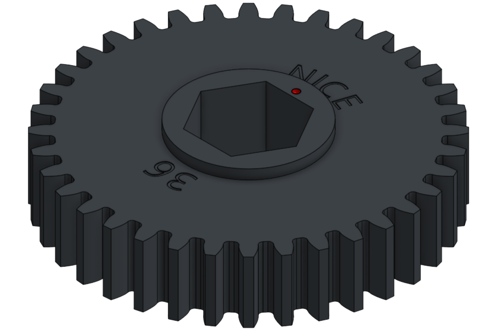
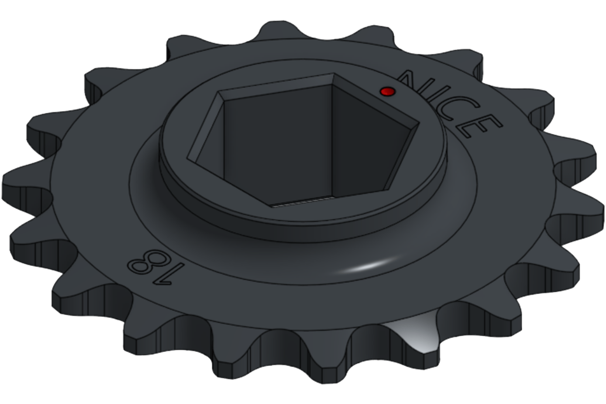
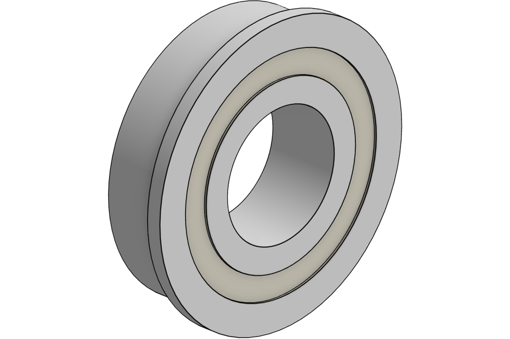

👋 欢迎！¶ 欢迎来到 NICE Robotics 官方产品文档，感谢您信任并选择我们的产品！ NICE Robotics 由多名 FRC 校友创立于 2025 年，我们的团队成员拥有丰富的竞赛经验和工程背景。我们致力于为 FRC 队伍提供基于实战经验、经过验证的可靠零件和完整系统，帮助你的队伍更有信心、更高效地构建机器人。 🔥 快速索引¶  齿轮 — NICE-02-01 查看详情  链轮&链条 — NICE-02-02 查看详情  轴承&轴 — NICE-04-01 & 02 查看详情 方管塞 — NICE-04-08 查看详情 螺母条 — NICE-04-07 查看详情